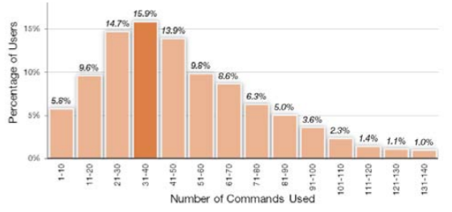

We explore the use of modern recommender system technology to address the problem of learning software applications. Before
describing our new command recommender system, we first define relevant design considerations. We then discuss
a 3 month user study we conducted with professional users to evaluate our algorithms which generated customized
recommendations for each user. Analysis shows that our item-based collaborative filtering algorithm generates
2.1 times as many good suggestions as existing techniques. In addition we present a prototype user interface
to ambiently present command recommendations to users, which has received promising initial user feedback.
Many of today’s programs have not hundreds, but thousands of commands for a user to become aware of and learn [18]. In each release, more commands might be added, and without explicit effort on the part of the user to learn about new functionality, they are left untouched. For example, in Autodesk's AutoCAD, the number of commands has being growing linearly over time. And even with the thousands of commands available in AutoCAD, the largest
group of users only use between 31 and 40 of them (Figure 1).
An inherent challenge with such systems is a user’s awareness [14, 39] of the functionality which is relevant to their specific goals and needs. Awareness of functionality is not only important for learning how to accomplish new tasks, but also learning how to better accomplish existing tasks. In a potential “best case scenario”, the user works with an expert next to them, who can recommend commands when appropriate.
While previous HCI literature has looked at intelligent online agents, most of this work is focused on predicting what current state a user is in, if they require assistance, and how
to overcome problems [4, 8, 9, 15, 17, 20, 31]. To our knowledge, here are few examples of systems specifically focused on recommending new commands to users [24, 25]. Furthermore, such work has never been thoroughly implemented or evaluated, and has important limitations.
Systems which recommend content to users, known as “recommender systems” are very popular today in other domains. Some of the most popular movie, shopping, and music websites provide users with personalized recommendations [23, 29, 34, 36], and research in improving recommendation algorithms is an active field of research [2]. In this paper we introduce and investigate the application of modern recommender system algorithms to address the ommand awareness problem in software applications.

Figure 1. Histogram of the number of commands used by AutoCAD users. The largest group of users only use between 31 and 40 commands.
Our new system, CommunityCommands, collects usage data from a software system’s user community, and applies recommender system algorithms to generate personalized command recommendations to each user. With CommunityCommands we hope to expose users to commands they are not currently familiar with that will help them use the software more effectively. The recommended commands are displayed in a peripheral tool palette within the user interface that the user to refer to when convenient. Thus, the system is much more ambient in nature compared to online agents such as “Clippy” or even simple techniques like “Tip of the Day”. After discussing implementation details, we describe a 3 month evaluation of our recommender system algorithms, conducted with real users. Our new algorithms provided significantly improved recommendations in comparison to existing approaches.